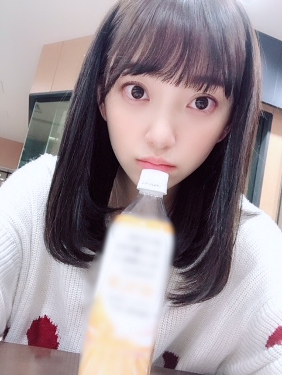
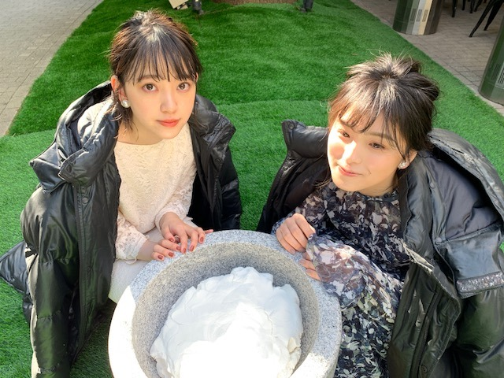

2018/1227Thuミディアム年末
こんにちは！
髪、少し切りました。
バサっと毛先を切って鎖骨あたりの長さのミディアムです
髪色も少し変えました〜
newヘアーでレコ大、紅白、CDTVに出ます☺︎
頑張る！


みなさんはもう仕事納めしたのかな...？
今日発売の with に桃子と載っています

クールポコさんや〜って言って
ずっと2人で笑ってました。笑
もしもOLだったら...シリーズです☺︎
フェミニンなヘアメイクと洋服が上品で私好みでした
withさんは初めてだったのですが
佐々木希さんが好きで、毎月見させていただいていたので嬉しかったです

見てね〜☺︎
では！
2018/12/27 10:48
コメント(378)
今ってエクステだよね？
エクステを切ったってことかな？
エクステを切ったってことかな？
ブログ更新ありがと～
どんな髪型でも好きだよ～
どんな髪型でも好きだよ～
こんにちわ！
紅白、CDTV絶対観る！テレビの前で応援してます！頑張ってー(๑•̀ㅂ•́)و✧
髪型とてもいいです( * ॑꒳ ॑* )
紅白、CDTV絶対観る！テレビの前で応援してます！頑張ってー(๑•̀ㅂ•́)و✧
髪型とてもいいです( * ॑꒳ ॑* )
可愛い
クールポコ
仕事納めは31日
クールポコ
仕事納めは31日
ポコ未央奈ブログ更新ありがとう！
ミディアムも可愛い！
レコ大、紅白、CDTV楽しみにしてるよ。
ミディアムも可愛い！
レコ大、紅白、CDTV楽しみにしてるよ。
ミディアムヘアも似合ってて可愛いね！
好きです！
好きです！
すこ！みおなすこ！
頑張ってね(*ﾉωﾉ)
髪型似合ってます^ ^
レコ大、紅白絶対観ます！
レコ大、紅白絶対観ます！
大変だよ〜〜堀 みおな♪が髪を切ったよ〜〜↑↑ な〜に〜↑↑↑やっちまったな‼️ ヽ(￣▽￣)ノ切った髪の毛‼️ 俺にくれ♪ 切った髪の毛‼️俺にくれ♪ヽ(´▽｀)/ズラにするΣ(゜Д゜)
ブログ更新ありがとうございます
髪切ったんだ！可愛い‼︎
でも正直長い方が自分は好きかな笑
どんな髪型でも可愛いけどね！
レコ大も紅白もCDTVも全部観ます！楽しみにしてる‼︎笑
体調崩さないようにして下さいね。
ずっと応援してます
お仕事頑張って下さい
したっけ〜
髪切ったんだ！可愛い‼︎
でも正直長い方が自分は好きかな笑
どんな髪型でも可愛いけどね！
レコ大も紅白もCDTVも全部観ます！楽しみにしてる‼︎笑
体調崩さないようにして下さいね。
ずっと応援してます
お仕事頑張って下さい
したっけ〜
未央奈と桃ちゃん、クールポコみたいだね
やっちまったな！をでんちゃんの名セリフ、ヤラカシタに変えれば乃木坂46オリジナルコント作れるね
佐々木希テイストがちゃんとでてるよ、未央奈ものんちゃんに負けないくらい綺麗だからね 岩尾望じゃないよ(笑)
やっちまったな！をでんちゃんの名セリフ、ヤラカシタに変えれば乃木坂46オリジナルコント作れるね
佐々木希テイストがちゃんとでてるよ、未央奈ものんちゃんに負けないくらい綺麗だからね 岩尾望じゃないよ(笑)
写真で見ても十分可愛いけど
この前初めて行った全握はやばすぎた笑
市役所は明日仕事納め！！
この前初めて行った全握はやばすぎた笑
市役所は明日仕事納め！！
最高かよ
ほちゃかわ
年末楽しみ！
年末楽しみ！
昨日のレコメンお疲れ様でした。最高でしたね。
年末忙しいと思いますけど、頑張ってください！応援してます！良いお年を！
年末忙しいと思いますけど、頑張ってください！応援してます！良いお年を！
かわよ
未央奈のおかげで勉強頑張れます笑
年末忙しいと思いますが、
お体に気をつけて頑張ってください！
未央奈のおかげで勉強頑張れます笑
年末忙しいと思いますが、
お体に気をつけて頑張ってください！
かわいい！
学生だけど年末ずっとバイト笑
学生だけど年末ずっとバイト笑
未央奈 こんにちは！
髪 切っちゃいましたね。
でも、似合ってますよ！
カラーも長さも。
ヘアーとメイクは女の子の特権だからね、
男の子からは、羨ましかったりします。
そうそう、Overture 届いて見ました！
いつもと違う感じで、良かった！
banana が特に。
with もチェックします。
頑張って買います。
今年も残りわずかですが、
いっぱい いっぱい 楽しみましょう！
そして、来年に繋いでいきましょう！
未央奈は未央奈のままで、
最高の笑顔を！
髪 切っちゃいましたね。
でも、似合ってますよ！
カラーも長さも。
ヘアーとメイクは女の子の特権だからね、
男の子からは、羨ましかったりします。
そうそう、Overture 届いて見ました！
いつもと違う感じで、良かった！
banana が特に。
with もチェックします。
頑張って買います。
今年も残りわずかですが、
いっぱい いっぱい 楽しみましょう！
そして、来年に繋いでいきましょう！
未央奈は未央奈のままで、
最高の笑顔を！
エクステを付けすぎるみお＼(^o^)／お疲れ様でした
年末の歌番組頑張って(/･ω･)/
Withさんも楽しみ＼(^o^)／
これからも頑張って(/･ω･)/
年末の歌番組頑張って(/･ω･)/
Withさんも楽しみ＼(^o^)／
これからも頑張って(/･ω･)/
ブログ更新ありがとー！
髪切った姿も素敵です！まだバイトがあります〜泣
with買います！
髪切った姿も素敵です！まだバイトがあります〜泣
with買います！
みおなちゃんすき！
この髪型も可愛い！！
可愛いが溢れてる！！
この髪型も可愛い！！
可愛いが溢れてる！！
ブログ更新ありがとう！
私の仕事納めは明日です。
しかし先週から体調崩してしまい、通院中です。
悲しい年末です。
未央奈と桃子の餅つき写真は洋服とのミスマッチ感がすごい。
ヒール履いていたら実際は無理でしょ？
何か餅ではなく、雪のようにも見えるけど…?
今年も残りわずか。
テレビ番組は全部チェックしますよ〜！
私の仕事納めは明日です。
しかし先週から体調崩してしまい、通院中です。
悲しい年末です。
未央奈と桃子の餅つき写真は洋服とのミスマッチ感がすごい。
ヒール履いていたら実際は無理でしょ？
何か餅ではなく、雪のようにも見えるけど…?
今年も残りわずか。
テレビ番組は全部チェックしますよ〜！
好きです
ミディアム可愛いー！
ミディアム可愛いー！
なんのじゅーす飲んでるのー？次のブログで答え教えて⭐️
こんにちは！
髪の毛を少し切ったんやね～
ミディアム年末とっても楽しみです♡
レコメン！はいつもよりロング出演で、、
とっても楽しくて嬉しかったです♡
ゆったりニット姿も似合っててカワイイね♡
withさんに載るのも新鮮だし、
桃ちゃんとのクールポコさん楽しそうです☆
やっちまったなぁ～って聞こえますよー！笑
上品なOLさんの方もとっても楽しみです♪
みおちゃんへの想いに休みは無いんやで～☺
髪の毛を少し切ったんやね～
ミディアム年末とっても楽しみです♡
レコメン！はいつもよりロング出演で、、
とっても楽しくて嬉しかったです♡
ゆったりニット姿も似合っててカワイイね♡
withさんに載るのも新鮮だし、
桃ちゃんとのクールポコさん楽しそうです☆
やっちまったなぁ～って聞こえますよー！笑
上品なOLさんの方もとっても楽しみです♪
みおちゃんへの想いに休みは無いんやで～☺
かわい〜！！！
私は明日まで学校です（笑）
番組観るよ〜！たのしみにしてます！
私は明日まで学校です（笑）
番組観るよ〜！たのしみにしてます！
ブログ更新ありがとう〜〜
モバメの頻度が高くて
メール来るたび嬉しくなっちゃう☺︎❤︎
最近は髪長めの未央奈ちゃん、
ポニーテールがすんごい似合ってた印象 !
個人的にはお団子がみたいな〜〜期待しとくね（笑）
ショート未央奈ちゃんも好きやから2019年期待しとく（笑）
年末年始たぶん忙しい日々が続くと思うけど、
体調に気を付けてたくさん楽しんでね〜〜
モバメの頻度が高くて
メール来るたび嬉しくなっちゃう☺︎❤︎
最近は髪長めの未央奈ちゃん、
ポニーテールがすんごい似合ってた印象 !
個人的にはお団子がみたいな〜〜期待しとくね（笑）
ショート未央奈ちゃんも好きやから2019年期待しとく（笑）
年末年始たぶん忙しい日々が続くと思うけど、
体調に気を付けてたくさん楽しんでね〜〜
未央奈が若月から箸くんの2代目後継者と選ばれたのは良かった。未央奈らしい箸くんをやって下さい！
更新ありがとう！
お疲れ様でした！
何時も頑張って
ずっと大好き！
お疲れ様でした！
何時も頑張って
ずっと大好き！
チョット この頃 ビックリするぐらい
綺麗で かわいくなっていくんで
ビックリ！！！
綺麗で かわいくなっていくんで
ビックリ！！！
ちゃんと可愛いな
可愛いですね
堀さんのブログみて仕事頑張ろってなります
堀さんのブログみて仕事頑張ろってなります
髪、切ったんだねー♪＼(^o^)／
可愛いよー！(^_-)
with見るー！
可愛いよー！(^_-)
with見るー！
想像以上に似合いすぎ！最後まで全員でがんばってね！
可愛い…！！
全握のとき握手ありがとう～～！！
初めての握手会で緊張してたけど
初めての握手が未央奈で良かった！！！
全握のとき握手ありがとう～～！！
初めての握手会で緊張してたけど
初めての握手が未央奈で良かった！！！
大晦日まで大忙しですね、どの番組も楽しみ。
レコ大は少しハラハラ、乃木坂ちゃんガンバレー！
レコ大は少しハラハラ、乃木坂ちゃんガンバレー！
年末、忙しいかもしれないけれど
頑張ってね。応援してます。
頑張ってね。応援してます。
かわいい！
好きすぎる！
好きすぎる！
おはよう。
レコメンお疲れさまでした。
ラジオは最近、とても感度がよくって、
クリアに聞こえます。
radikoで聴いてるからでもなくて。。
子どもの頃は、チューニングも合ってなかったこともあるのか、
ノイズがすごかったし、ばさばさした音声でDJがしゃべってた。
電波にたくさんの情報が乗せられるようになって、
格段に進化しましたね。
でも、
ラジオもノイジーな方が、
CDじゃなくてレコードの方が、
時にアナログ感覚が染み付いたわたしの心には馴染みがよかったりするのです。
最近は4Kだの8Kだのと画像のクリアさがうたい文句になってますが、
ブラウン管の画像が懐かしくもあるのです。
「あの頃は～」と、
若い頃を振り返る老人のような
心境でもないけど、
当時の、
時にベールの向こうの
あるいはすりガラスの向こうの
まどろっこしい距離感を懐かしむのです。
新しい年、
「亥」の一番に
みおなの思いが
実る年となりますように。。。
どうか、載せてね。
レコメンお疲れさまでした。
ラジオは最近、とても感度がよくって、
クリアに聞こえます。
radikoで聴いてるからでもなくて。。
子どもの頃は、チューニングも合ってなかったこともあるのか、
ノイズがすごかったし、ばさばさした音声でDJがしゃべってた。
電波にたくさんの情報が乗せられるようになって、
格段に進化しましたね。
でも、
ラジオもノイジーな方が、
CDじゃなくてレコードの方が、
時にアナログ感覚が染み付いたわたしの心には馴染みがよかったりするのです。
最近は4Kだの8Kだのと画像のクリアさがうたい文句になってますが、
ブラウン管の画像が懐かしくもあるのです。
「あの頃は～」と、
若い頃を振り返る老人のような
心境でもないけど、
当時の、
時にベールの向こうの
あるいはすりガラスの向こうの
まどろっこしい距離感を懐かしむのです。
新しい年、
「亥」の一番に
みおなの思いが
実る年となりますように。。。
どうか、載せてね。
ミディアムもよきかな
よきかな(蘭世氏から拝借)
のりさんも気づいてくれた？
レコメンお疲れ様でした
よきかな(蘭世氏から拝借)
のりさんも気づいてくれた？
レコメンお疲れ様でした
こんにちは
よく似合いますね 美人( ・∇・)
桃ちゃんとの写真素敵ですね。
年末年始体調気をつけて、駆け抜けてください。今日夜勤で仕事おさめ
よく似合いますね 美人( ・∇・)
桃ちゃんとの写真素敵ですね。
年末年始体調気をつけて、駆け抜けてください。今日夜勤で仕事おさめ
こんばんは。ブログ更新ありがとうございます。
ボブだった髪がだいぶ伸びましたね。ミディアムも可愛いですっ！！デビュー当時のロングも可愛かったので、いろんな髪型似合いますね。私もお正月に備えて、床屋に行かねば！！
ではまた。
ボブだった髪がだいぶ伸びましたね。ミディアムも可愛いですっ！！デビュー当時のロングも可愛かったので、いろんな髪型似合いますね。私もお正月に備えて、床屋に行かねば！！
ではまた。
髪の毛切ったんや！！！！！かわいい！！！！
個人的にやけど前髪巻かんとぱっつんのが好み☼☼
告知ありがとう！また買いに行く！！！
個人的にやけど前髪巻かんとぱっつんのが好み☼☼
告知ありがとう！また買いに行く！！！
またメイク特集とかしてほしいです
可愛すぎなんだけど！！！
みおな
ほりっぴー！
ブログ更新ありがとう( •ᴗ• )
昨日レコメンお疲れ様〜！！
やはり未央奈の声はすごく癒される( ˶˙ᵕ˙˶ )
髪型いいねっ！可愛い☺️
歌番組もしっかりみるからね︎☺︎
どんな髪型なのかどんなイヤリングなのか
どんな衣装なのか毎回楽しみだよ( * ॑꒳ ॑* )
withは今買ってきたよ⸜(* ॑꒳ ॑* )⸝⋆*
帰ってじっくりと読みます︎☺︎！
ブログ更新ありがとう( •ᴗ• )
昨日レコメンお疲れ様〜！！
やはり未央奈の声はすごく癒される( ˶˙ᵕ˙˶ )
髪型いいねっ！可愛い☺️
歌番組もしっかりみるからね︎☺︎
どんな髪型なのかどんなイヤリングなのか
どんな衣装なのか毎回楽しみだよ( * ॑꒳ ॑* )
withは今買ってきたよ⸜(* ॑꒳ ॑* )⸝⋆*
帰ってじっくりと読みます︎☺︎！
ミディアムも似合ってるね
年末年始の活躍楽しみにしてます
体調に気をつけて頑張ってね
明日で仕事納めです
年末年始の活躍楽しみにしてます
体調に気をつけて頑張ってね
明日で仕事納めです


髪切った堀ちゃん本当に可愛いね。
年末の歌番組見るね。